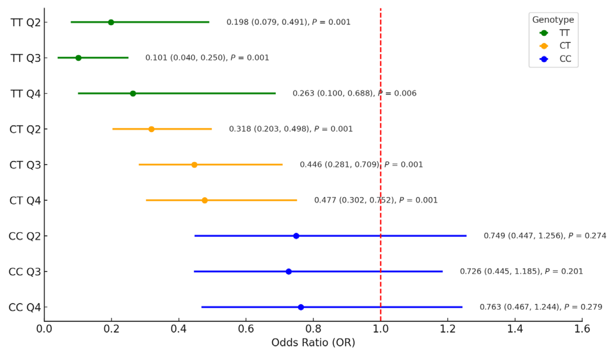
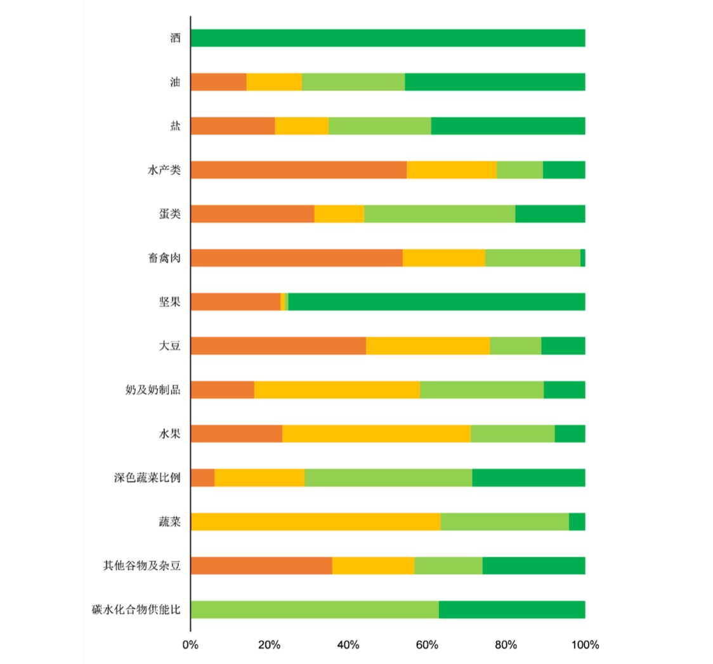
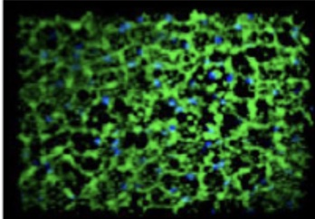
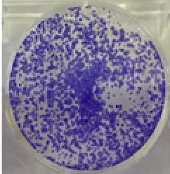
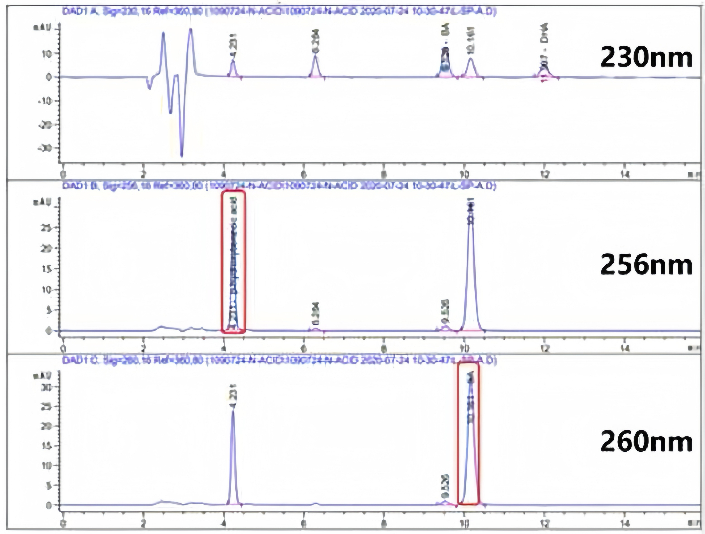
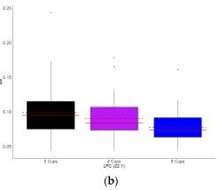

Liang-Chun Kuo
About Me
I am a MSc student in Public Health Nutrition at Peking University Health Science Center.
My research focuses on the interaction between low-carbohydrate diets and genetics, particularly in the context of type 2 diabetes.
I am passionate about exploring how personalized nutrition can prevent and manage chronic diseases, with specific interests in healthy eating, dietary patterns, food environment interventions, and dietary behavior change.In addition to my research, I have actively participated in community health projects, including a recent family cohort study in rural northern China.
These experiences have deepened my understanding of public health at the grassroots level.
Growing up in a family of educators, I developed a strong sense of integrity, diligence, and a commitment to learning.
These values drive my academic pursuits and my dedication to improving public health.Outside of academics, I enjoy cycling, mountain climbing, and photography, all of which have taught me perseverance and the importance of goal-setting.
I aspire to contribute to public health strategies that address chronic diseases through evidence-based nutrition.
Research Interests
- Dietary Patterns
- Healthy Eating
- Food Environment Interventions
- Dietary Behavior Change
Academic and research activities
- [Jul 2024 - Aug 2024] Peking University, Beijing, CN/Team Leader / Participated in and led fellow students to complete a family cohort follow-up study on common chronic non-communicable diseases among residents in rural areas of northern China.
- [Sep 2023 - Jan 2024] Chinese Nutrition Society - Nutrilite Foundation Project, Beijing, CN/Experimental Operations. / The study focuses on the mechanism of EGCG's anti-photoaging effects on the skin, with responsibilities including conducting experimental operations.
- [Jul 2023 - now] Peking University, Beijing, CN/Principal Investigator / The work involves experimental design, data collection, data analysis, and the writing of results and reports for a study on the gene-diet interaction between a low-carbohydrate diet and type 2 diabetes.
- [Jul 2023 - Aug 2023] China Health Development Research Center, Beijing, CN/ Project Leader/ Participated in and led fellow students to complete the research on the 'Market Regulation Strategy for Preventing Youth from Using E-Cigarettes' under the China Health Development Research Center, as part of a project funded by the China Medical Board (CMB).
- [March 28 - March 29, 2023] 2023 CAMPUS Asia International Symposium, Beijing, CN/ Representative of Peking University/ With the theme "International Medical and Pharmaceutical Research Community in the Post-Pandemic Era," explain the impact of non-communicable diseases and diet on public health and the intervention measures for improvement.
- [Oct - Dec, 2022] National Health Commission, NHC, Beijing, CN/ Assistance/ The study focuses on analyzing metabolic syndrome and its correlation with dietary nutrition in school-age children in Beijing, with the individual participating in the later stages of article writing.
Award
- [2025] Excellent Graduate of Peking University.
- [2024] Merit Fellowship recipient/ Hong Kong, Macau, and Taiwan Students Peking University Merit Fellowship recipient
- [2023] Merit Fellowship recipient/ Hong Kong, Macau, and Taiwan Students Peking University Merit Fellowship recipient
- [2023] Work-Study Star/ Peking University Health Science Center "Work-Study Star" for the 2023-2024 Academic Year
- [2020] Outstanding Graduates (Top 0.3%)
- [2020] Prize Book Award/ Mr. Houfu Prize Book Award
- [2010] Representative of Outstanding Student Organizations/ President of the 25th Student Union of Chung Shan Medical University
Publications
-
 Peking University, 2025.PDF Master’s Thesis
Peking University, 2025.PDF Master’s Thesis -

-
Peking University, 2025.PDF Master’s Thesis
-
 CVPRSubmitted to 14th Asian Congress of Nutrition (ACN), 2023.PDF Conference paper
-
Chung Shan Medical University, 2022.PDF Seminars
-
Chung Shan Medical University, 2022, Aug 2022 - Sep 2022.PDF Course report
-
Department of Laboratory, Taipei City Health Bureau, Taipei, Taiwan, Jun 2021 - Sep 2021.PDF Independent Study
-
Chung Shan Medical University, 2021, May 2021 - Jul 2021.PDF Course report
Certifications
- Health Management Specialist(China)
- Dietitian (Taiwan)
- Food technologist (Taiwan)
- Food Safety and Hygiene Program
- Advanced Training certificate for Food Volunteer Training
- Open WHO Training
- DELF / DALF French Proficiency Test A1
Volunteer Experience
- [Oct 26 - Oct 31, 2023] Cross-Strait Medical Student Exchange Program, Guangxi, CN/ Representative of Peking University/ Fully participated in internship accompaniment, and clinical training lectures, and provided accurate health knowledge.
- [Oct - Dec, 2022] Involvement during the COVID-19 Pandemic, Beijing, CN/ A member/ Served as a member of the school's nucleic acid testing team, actively participating in volunteer services.
- [Jun 2020 - Aug 2021] University Social Responsibility (USR), Taichung, TW/ Assistant/ Assisted residents in Shigang, Taiwan to promote the Internet of Things (IoT) and health.
- [Jun 2019 - Aug 2021] Chung-Shan Medical University, Taichung, TW/ Food Safety Youth Team - Food Volunteers/ Deeply engaged in communities, school meal services, and industry catering sites, providing guidance and promoting food safety and education. elementary schools in Taoyuan, Taiwan, every semester.
- [2015 - 2018] Shanghai University of Traditional Chinese Medicine Affiliated Hospital Clinic Services, Shanghai, CN/ Volunteer/ Assist clinic doctors with medication storage, dispensing to patients, and documenting patient medication usage during winter and summer holidays each year.
Powered by Jekyll and Minimal Light theme.